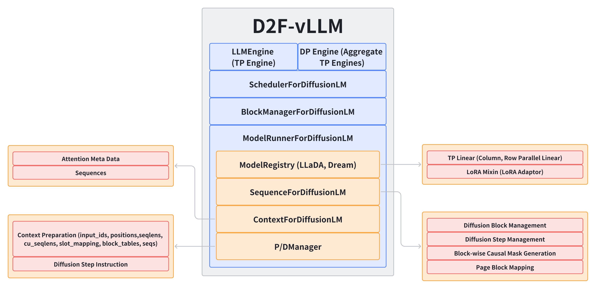

Overview
Nano-vLLM to D2fEngine

Highlights
0x00. Basic vLLM Features
- Paged Attention for dLLM: Supports PagedAttention for Diffusion LLM to handle long sequences efficiently.
- Dynamic Batching: Supports dynamic batching with flexible sequence lengths.
- Tensor Parallelism + Data Parallelism: Supports tensor parallelism and data parallelism for efficient inference.
0x01. Fully Support for D2F Inference
D2fEngine fully supports D2F inference: piplined block parallel decoding. Also, with proper configuration, it can support Block Diffusion inference without any training.
0x02. Distinct KV Cache Layout (more efficient, developing)
1. Fused Varlen Parallel Decoding Kernel
The core algorithm the kernel comes from FlashAttention2.
Major points:
-
Shapes of inputs:
q: [TotalSeqLen, NumHeads, HeadDim]k,v: [TotalSeqLen, NumKvHeads, HeadDim]kcache: [NumPages, NumKvHeads, HeadDim // x, PageSize, x]vcache: [NumPages, NumKvHeads, HeadDim, PageSize]mask: [TotalSeqLen, TotalSeqLen] (block diagonal mask, inner mask is block-wise causal)
-
Other inputs:
page/block_table: [NumSeqs, MaxNumPages]cu_seqlens_q: [NumSeqs + 1]ctxlens: [NumSeqs]total_seqlens: [NumSeqs]slot_mapping: [TotalSeqLen]
-
Three constexpr parameters:
BLOCK_M(forqtiles),BLOCK_N(forkvtiles), andPAGE_SIZE(forkvcachetiles). -
Three accumulation registers:
acc(outputs, [BLOCK_M, BLOCK_N]),m_i(rowise max elems for online-softmax, [BLOCK_M, ]), andl_i(rowise factors of online-softmax, [BLOCK_M, ]).
Kernel Pipeline:
-
[STAGE 1] Attention Against KV Cache: Load
kvcacheand compute attention ofq&kvcachewith fixed block size (tile size) equals to thePAGE_SIZEofpage/block_table. Registering all the result of current block of q inacc,m_i,l_i. -
[STAGE 2] Input QKV Self-Attention: Load
kvand compute attention ofq&kvwith fixed block size (tile size) equals toBLOCK_N, along with custommaskapplying. Registering all the result of current block of q inacc,m_i,l_i. -
[STAGE 3] Output: Store the result of
acctoout.
2. Parallel KV Cache Store Kernel (Distinct)
Parallel KV Cache Store Kernel (Distinct) is designed to store the KV cache in a distinct layout, which is more efficient for D2fEngine.
What should be noted is that because the input kv is not all being stored every time call the kernel, thus the slot_mapping preparation process is way different that of traditional vLLM designed specifically for Auto-Regressive LLMs.
0x03. Unified KV Cache Layout
1. Parallel KV Cache Loading/Storing Kernels + FlexAttention Implemented Block Diagonal Attention
Major points:
Except for the kvcache layout, the other inputs are the same to the Fused Varlen Parallel Decoding Kernel.
kvcache: [NumPages, PageSize, NumKvHeads, HeadDim] (same as the flash kv cache of vLLM, used for flash attention)
Function Pipeline:
The Parallel KV Cache Storing (Unified) is similar to the Parallel KV Cache Storing (Distinct) except for the fetching indices build-up procedure difference caused by the different kvcache layout.
Generate in-sequence-masks from Sequence , which is a block-wise causal mask, then in the Context post-init, generate the block-diagonal mask for the whole batched input sequence.
Using the block-diagonal mask, the FlexAttention Implemented Block Diagonal Attention can be used to compute the attention of q & kvcache with block sparsity.
Demo Benchmark
Configuration
| Parameter | Value |
|---|---|
| enforce_eager | True |
| data_parallel_size | 8 |
| tensor_parallel_size | 1 |
| gpu_memory_utilization | 0.3 |
| max_num_batched_tokens | 5120 |
| max_num_seqs | 20 |
| max_model_len | 5120 |
Devices: 8x Nvidia H20-NVLink 96G
Dream-v0-Base-7B
GSM8K-CoT
| Metric | Value |
|---|---|
| Total Samples | 1319 |
| Total Tokens | 336429 |
| Metric | D2fEngine | D2F-Baseline | Base Model |
|---|---|---|---|
| Total Time | 380.79 (92.8x) | 3693.20 (9.6x) | 35349.20 (1.0x) |
| TPS | 883.51 (93.0x) | 91.2 (9.6x) | 9.5 (1.0x) |
| AVG Latency | 0.29 (92.4x) | 2.8 (9.6x) | 26.8 (1.0x) |
HumanEval
| Metric | Value |
|---|---|
| Total Samples | 164 |
| Total Tokens | 36198 |
| Metric | D2fEngine | D2F-Baseline | Base Model |
|---|---|---|---|
| Total Time | 49.27 (41.9x) | 508.40 (4.1x) | 2066.4 (1.0x) |
| TPS | 734.68 (36.4x) | 73.2 (3.6x) | 20.2 (1.0x) |
| AVG Latency | 0.30 (42.0x) | 3.1 (4.1x) | 12.6 (1.0x) |